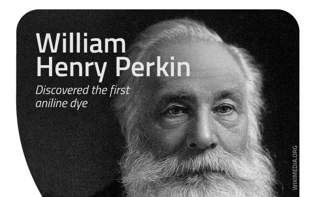

The man who invented synthetic dyes
William Henry Perkin was born on March 12,1838, in London, England.
As a boy, Perkin’s curiosity prompted early interests in the arts, sciences, photography, and engineering. But it was a chance stumbling upon a run-down, yet functional, laboratory in his late grandfather’s home that solidified the young man’s enthusiasm for chemistry.
As a student at the City of London School, Perkin became immersed in the study of chemistry. His talent and devotion to the subject were perceived by his teacher, Thomas Hall, who encouraged him to attend a series of lectures given by the eminent scientist Michael Faraday at the Royal Institution. Those speeches fired the young chemist’s enthusiasm further, and he later went on to attend the Royal College of Chemistry, which he succeeded in entering in 1853, at the age of 15.
At the time of Perkin’s enrolment, the Royal College of Chemistry was headed by the noted German chemist August Wilhelm Hofmann. Perkin’s scientific gifts soon caught Hofmann’s attention and, within two years, he became Hofmann’s youngest assistant. Not long after that, Perkin made the scientific breakthrough that would bring him both fame and fortune.
At the time, quinine was the only viable medical treatment for malaria. The drug is derived from the bark of the cinchona tree, native to South America, and by 1856 demand for the drug was surpassing the available supply. Thus, when Hofmann made some passing comments about the desirability of a synthetic substitute for quinine, it was unsurprising that his star pupil was moved to take up the challenge.
During his vacation in 1856, Perkin spent his time in the laboratory on the top floor of his family’s house. He was attempting to manufacture quinine from aniline, an inexpensive and readily available coal tar waste product. Despite his best efforts, however, he did not end up with quinine. Instead, he produced a mysterious dark sludge. Luckily, Perkin’s scientific training and nature prompted him to investigate the substance further. Incorporating potassium dichromate and alcohol into the aniline at various stages of the experimental process, he finally produced a deep purple solution. And, proving the truth of the famous scientist Louis Pasteur’s words ‘chance favours only the prepared mind’, Perkin saw the potential of his unexpected find.
Historically, textile dyes were made from such natural sources as plants and animal excretions. Some of these, such as the glandular mucus of snails, were difficult to obtain and outrageously expensive. Indeed, the purple colour extracted from a snail was once so costly that in society at the time only the rich could afford it. Further, natural dyes tended to be muddy in hue and fade quickly. It was against this backdrop that Perkin’s discovery was made.
Perkin quickly grasped that his purple solution could be used to colour fabric, thus making it the world’s first synthetic dye. Realising the importance of this breakthrough, he lost no time in patenting it. But perhaps the most fascinating of all Perkin’s reactions to his find was his nearly instant recognition that the new dye had commercial possibilities.
Perkin originally named his dye Tyrian Purple, but it later became commonly known as mauve (from the French for the plant used to make the colour violet). He asked advice of Scottish dye works owner Robert Pullar, who assured him that manufacturing the dye would be well worth it if the colour remained fast (i.e. would not fade) and the cost was relatively low. So, over the fierce objections of his mentor Hofmann, he left college to give birth to the modern chemical industry.
With the help of his father and brother, Perkin set up a factory not far from London. Utilising the cheap and plentiful coal tar that was an almost unlimited by product of London’s gas street lighting, the dye works began producing the world’s first synthetically dyed material in 1857. The company received a commercial boost from the Empress Eugenie of France, when she decided the new colour flattered her. Very soon, mauve was the necessary shade for all the fashionable ladies in that country.
Not to be outdone, England’s Queen Victoria also appeared in public wearing a mauve gown, thus making it all the rage in England as well. The dye was bold and fast, and the public clamoured for more. Perkin went back to the drawing board.
Although Perkin’s fame was achieved and fortune assured by his first discovery, the chemist continued his research. Among other dyes he developed and introduced were aniline red (1859) and aniline black (1863) and, in the late 1860s, Perkin’s green. It is important to note that Perkin’s synthetic dye discoveries had outcomes far beyond the merely decorative. The dyes also became vital to medical research in many ways. For instance, they were used to stain previously invisible microbes and bacteria, allowing researchers to identify such bacilli as tuberculosis, cholera, and anthrax. Artificial dyes continue to play a crucial role today. And, in what would have been particularly pleasing to Perkin, their current use is in the search for a vaccine against malaria.